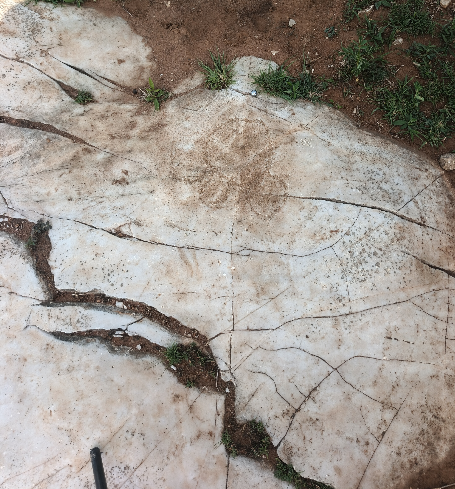

Dalle n°02
Fiche documentaire : photo de terrain, modèle 3D par photogrammétrie, imagerie RTI.
Photo de terrain

Modèle 3D — photogrammétrie
Imagerie RTI
Visualisation interactive : déplacez la souris pour changer la direction de la lumière et révéler les reliefs gravés.
🖱️ Déplacez la souris pour orienter la lumière · Molette pour zoomer
Télécharger le fichier RTI Format .rti — pour RTIViewer (Windows/Mac)